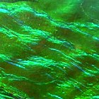

Každý šperk z naší nabídky je vyroben z jedinečného kusu ammelitu a je tedy vyjímečným originálem jak svou povrchovou strukturou, tak svým tvarem.
Více jak 65 miliónů let trvala proměna schránek Ammonitů než dosáhly současného vzhledu, z kterého pečlivým opracováním vyrábíme šperky.
Ammolite je kámen plný mystiky, pozitivní energie, přitahující štěstí a prosperitu. Historicky byl vnímán jako symbol božstva a hluboké meditativní síly.
Zdrojem pro název Ammonite je starověký Egypt. Ammon byl egyptský bůh, který považoval měkkýše za božské, byl vždy zobrazován s hlavou berana se spirálními rohy a tím tedy připomínal zakroucený tvar pláště Ammonitů. Římský válečník, filosof a historik Plinius starší pohlížel na Ammonite jako na nejposvátnější z kamenů a domníval se, že má schopnost vyvolávat prorocké sny.
Feng-šuej (feng shui) – doslova „vítr a voda“ - tradiční čínské učení, které se zabývá vztahem člověka a jeho životního prostoru v čase. Pokouší se nastolit harmonii v prostoru a umožnit nerušené plynutí energie ČCHI. Feng-šuej má dvě hlavní školy: školu formy a školu kompasu. Pracuje mimo jiné s polaritou jinu a jangu a s takzvanými pěti elementy (voda, země, dřevo, oheň, kov), snaží se mezi nimi nastolit harmonii prostřednictvím barev, tvarů, materiálů, vůní i zvuků. Jedním z pilířů této nauky je i čínská astrologie. Známý Feng Shui mistr Edward Kui Ming Li nazývá Ammolite "nejvlivnější kámen tisíciletí". Mezi významné vlastnosti Ammolite, které jsou uznávány mnoha odborníky v rámci Feng Shui, patří zvyšování toku ČCHI po celém těle, snižování hladiny toxicity a podpora životní pohody. Stimuluje a podporuje bohatství, tvořivost, intelekt, energii a moudrost. Úžasný klenot přináší nejen rovnováhu těla osoby, ta pozitivně ovlivňuje také své okolí. Přítomnost Ammolite ve vaší kanceláři bude přispívat k úspěšnosti vašich obchodních jednání, jeho přítomnost ve vašem domě či bytě přispěje ke šťastnému rodinnému životu. Praktici Feng Shui věří, že za posledních sedmdesát milionů let tento geologický fenomén absorboval značnou část pozitivní kosmické energie ze země a vesmíru. Světelná energie je jedna z forem ČCHI a je vyzařována z Ammolite prakticky v každé barvě viditelného spektra. Každá barva odpovídá specifické vlnové energii, proto tedy různé specifické vlnové délky jednotlivých barev mohou pomoci při vyvažování různých oblasti osobní ČCHI.
Ammolite v oblasti kanadských Skalistých hor objevili poprvé Blackfoot Indiáni, kteří mu říkali "iniskim" neboli buvolí kámen. Legenda Indiánů vypráví příběh mimořádně kruté zimy, kdy všichni buvoli zmizeli z okolních pastvin a kmen byl sužován krutým hladem. Mladá, statečná indiánská žena se odvážila do lesa a v hlubokém sněhu hledala dříví na oheň. V tom zaslechla překrásnou píseň, následovala její hlas a pod velkým topolem poprvé objevila Ammolite. Duch jí řekl, že kámen je silný lék, talisman pro lov buvolů a bizonů a že by si jej měla vzít zpět ke svým lidem. Žena přinesla Ammolite zpět do tábora svého kmene, kde uspořádali slavnostní obřad. Druhý den ráno přitáhlo do okolí velké stádo buvolů, kmen byl ušetřen od hladomoru a strádání. Od té doby mají Indiáni Ammolite zabalený v buvolí kůži ve svém svazku léčebných a posvátných předmětů a používají ho při všech svých loveckých obřadech.
Ammoniti byli mořští měkkýši, hlavonožci, kteří se proháněli v mělkých mořích celého světa od konce prvohor do konce křídy. Asi před 65 milióny let spolu s ptakoještěry a dinosaury vyhynuli. Zkamenělé ulity ammonitů jsou běžné fosilie, které se nacházejí na celém světě. Mají hnědou, kouřovou, šedou nebo šedočernou barvu, pro zkameněliny organického původu typickou.
Ulity Ammonitů se často rozřezávají na dvě poloviny aby vynikla zajímavá struktura vnitřního uspořádání ulity. Horní plochy se vyleští a fosilie pak slouží jako výstavní kus pro sběratele.
Malé ulity se někdy používají jako hlavní ozdoba přívěsku či náušnic.
Nautilus, žijící „bratranec“ Ammonita.
Nejbližším žijícím příbuzným Ammonitů je Nautilus, česky loděnka. Jako ochranné zbarvení používá tento hlavonožec střídání červených a bílých ploch na hlavě, chapadlech a ulitě tak dokonale, že na první pohled není poznat kde končí živočich a kde začíná jeho ulita.
Panuje domněnka, že všichni Ammmoniti měli duhově opalizující ulity. Jestli podle této módy barvili i svá těla, musel na ně být úžasný pohled!
Vyleštěná ulita opalizujícího Ammonita(Ammolit) je unikátním výstavním kouskem.
V r. 1917 byly poprvé odborně prozkoumány a popsány ulity Ammonitů, pocházející z naleziště v provincii Alberta v Kanadě, které vykazovaly barevnou opalizaci podobnou opálu.
Jednotlivé nálezy barevně opalizujících kamenů byly v této oblasti známé již v historických dobách.
Jedná se o zkamenělé ulity Ammonitů druhu Placenticeras mekki a vzácnější Placenticeras intercalare.
Obvyklá velikost ulit se pohybuje mezi 20 a 90 cm v průměru. Celé, nepoškozené ulity jsou však spíše výjimkou. Většina ulit se nachází v úlomcích.
Opalizující Ammonit zaujal odbornou i laickou veřejnost.
Od dvacátých let se proto různé společnosti snažily přijít na způsob, jak využít krásu tohoto křehkého kamene ve špercích.
Úlomek neopracovaného Ammolitu.
V r. 1969 byl úlomek opalizujícího Ammonitu úspěšně vybroušen jako šperkový kámen.
Od osmdesátých let se datuje legální těžba opalizujícího Ammonitu těžební společností Korite.
Tato společnost jako první začala Ammonit brousit do tvaru šperkového kamene, který uvedla na trh pod obchodním názvem Korit.
V r. 1981 byl opalizují Ammonit (Korit) oficiálně uznán jako drahý kámen Mezinárodní komisí pro barevné drahé kameny pod jménem Ammolit.
Název Ammolit je složenina slov ammonit (hlavonožec) + lithos (kámen).
Vybroušený Ammolit modrozelené barvy.
Jediné dosud známé naleziště Ammolitů je oblast Skalistých hor v provincii Alberta v Kanadě.
Pouze asi 5% všech vytěžených ammonitů vykazuje barevnou opalizaci. Některé kameny jsou ale tak křehké, že je není možné vybrousit.
Pro tyto okolnosti je Ammolit velmi vzácným drahokamem. Odhaduje se, že naleziště v Albertě bude během 15 – 20 let vytěženo. Pokud se do té doby nenajde jiná lokalita, dá se předpokládat, že cena Ammolitu bude strmě stoupat.
Ammolity jsou z 97% tvořeny aragonitem (karbonát vápníku) a asi z 2% organickou látkou konchiolinem. O zbytek se pak dělí množství jiných prvků, jako například železo, hořčík, křemík, mangan, titan, stroncium a mnoho dalších.
Index lomu: 1,52 – 1,58
Měrná hustota: 2,67 – 2,85 g/cm3
Tvrdost: 4 (podle Mohsovy stupnice tvrdosti minerálů)
Ammolit má stupeň tvrdosti č. 4, tedy stejnou jako perly, ale nižší než opály (tvrdost opálu: 6).
Pod ultrafialovým světlem Ammolit září hořčičnou žluto oranžovou barvou.
Ammolit je citlivý na vyšší teploty a na náhlé změny teplot a to i v rozmezí 20 stupňů.
Aragonit, obsažený v Ammolitu má zvláštní uspořádání – je rozložen ve třech vrstvách.
Vrchní a spodní vrstvu tvoří sloupečkovité mikrokrystaly, zatímco ve střední vrstvě má aragonit strukturu miniaturních destiček, které se navzájem překrývají. Tloušťka jednotlivých vrstev kolísá, avšak střední vrstva bývá nejsilnější. Právě tato střední „destičková“ vrstva aragonitu má na svědomí barevnou opalizaci Ammolitu.
Síla aragonitových destiček je shodná s vlnovou délkou viditelného světla. Při průchodu světelného paprsku touto vrstvičkou dochází k rozložení světla na duhové barvy. Výsledná barva je ovlivněna tloušťkou střední vrstvy aragonitu. Silnější vrstvy opalizují červeně, slabší zeleně a nejslabší modře.
obrázek brože s ammolitem
Výrazově umírněná brož ve tvaru labutě pochází z ateliéru kanadského šperkaře Darryla Darbyho
Z jednoho úhlu pohledu ukazuje tento Ammolit pět barev najednou.
Ammolit je snad jediný drahokam na světě, který může mít jakoukoliv barvu. Na jednom kameni může být jedna barva anebo třeba sedm – jak je libo.
Jednoznačně nejčastěji mají broušené Ammolity červenou nebo zelenou barvu. To je dáno tím, že tyto kameny jsou nejsilnější a nejvíce kompaktní a proto se nejsnadněji brousí.
Méně často jsou pak k vidění Ammolity modré a úplnou raritou jsou kameny fialové.
Ammolity své barvy mění v závislosti na úhlu pohledu. Barvy přecházejí buď v jednom odstínu např. od žlutozelené přes čistě zelenou k modrozelené, nebo z barvy na barvu od červené ke žluté, od žluté k zelené atd. Nejvíce ceněné kameny jsou ty, které dokáží při stálé změně úhlu pohledu přehrát postupně všechny barvy duhy.
Znalci rozlišují několik desítek jemných nuancí povrchové struktury Ammolitu. Nám postačí, budeme-li vědět, že struktura Ammolitu je v podstatě dvojí: celistvá a mozaiková.
Původně byly všechny ulity celistvé a hladké.
Celistvá struktura neobvykle zbarveného Ammolitu připomíná oblačnou oblohu.
Ammolity uložené ve větších hloubkách si svoji celistvou strukturu většinou zachovaly. V průběhu geologických změn však byly vystaveny tlakům a proto se některé kameny zvlnily, zkrabatily nebo různě (esteticky) pokroutily.
Amolity uložené těsně pod povrchem byly nadto vystaveny vlivu počasí – horku, mrazu, větru, vodě. Proto většina Ammolitů z těchto horních vrstev popraskala. Vzniklé prasklinky byly zaplněny aragonitem z mladšího geologického období.
Tyto trhlinky dnes na Ammolitech vytvářejí více či méně jemnou, tmavou sít připomínající spáry mezi dlaždičkami, nebo mříž skleněné vitráže.
družicový snímek povrchu Měsíce |
 zčeřená vodní hladina |
 kůra stromů |
větrný vír |
rybí nebo hadí šupiny |
chrámová vitráž |
kůže ropuchy |
abstraktní obraz |
Ammolit sám o sobě je velmi tenký plátek 0,5 – 0,8 mm silný.
Po vybroušení a vyleštění je tato vrstva ještě trochu tenčí!
Proto se Ammolit brousí vždy společně s podložní vrstvou zkamenělého jílu, která má šedohnědou barvu. Tato spodní vrstva Ammolitu by u kamenů menších než 3,5 x 3,5 cm nikdy neměla být silnější než 1,50 mm.
Kvalitní kameny se vyleští a nechají v tomto stavu, případně, je-li to nutné, se zpevňují pomocí přírodních laků. Takto vybroušené Ammolity se označují jako přírodní duplet.
Někdy je vrstva Ammolitu tak slabá, že je nutné kámen ochránit i svrchu. V tom případě se na Ammolit shora nalepí vrstva vybroušeného přírodního křišťálu nebo syntetického korundu či spinelu. Takto upravené Ammolity se označují jako triplet.
Výjimečně se stává, že i přirozená spodní vrstva Ammolitu je nahrazena leštěnou destičkou černého onyxu. I takový kámen se označuje jako triplet.
Ukázka brože od Darryla Darbyho
Méně kvalitní Ammolity, nebo kameny menších velikostí se brousí převážně do typizovaných tvarů a rozměrů.
Tyto kameny jsou nejčastěji zasazovány do průmyslově vyráběných šperků, většinou do jednoduchých, nepříliš nápaditých přívěsků.
Standardně se Ammolity brousí do kulatého tvaru a dále do tvaru oválu, slzy, navety, čtverce nebo obdélníku.
Velké, nebo výjimečně kvalitní kameny se brousí do libovolných tvarů, tak aby vynikla neobvyklá nebo zajímavá struktura či rozložení barev Ammolitu.
Takové kameny pak samozřejmě směřují do zlatnických ateliérů, kde jsou zhodnoceny důvtipně vytvořeným klenotem přímo na tělo každého jednoho Ammolitu.
Pro nepravidelně vybroušené Ammolity se všeobecně ustálil výraz free-form. Před tím, než toto označení přišlo do módy se o volně broušených drahých kamenech hezky česky říkalo, že mají fantazijní tvar
Náhrdelník se čtyřbarevným ammolitem
S Ammolity je třeba zacházet s nejvyšší opatrností.
Kvalitní šperk je navržen tak, aby bezprostřední okolí Ammolitu bylo vyvýšeno nad jeho horní i spodní plochu. To má zabránit kontaktu Ammolitu s pokožkou, látkou a jinými předměty.
Ammolit by měl být zasazen způsobem, který umožní opakované vyjmutí ze šperku bez poškození Ammolitu i šperku. To je výhodné pro případy, kdy je nutné šperk opravit letováním v ohni, nebo kdy je šperk tak silně zoxidován, že je nutné kámen vyjmout, aby při čištění šperku nedošlo k jeho poškození.
Možná to na první pohled vypadá trochu divně, ale šperkům s Ammolity je nejlépe v uzavíratelném PVC sáčku. Zvláště, chcete-li ammolitový šperk uložit na delší dobu.
Na Ammolit zásadně nesaháme!
Všechny šperky s Ammolity si oblékáme až úplně naposled, když už jsme upravené, navoněné a máme nalakované vlasy.
Pokud si zapomenete sundat náušnice a nalakujete si vlasy, může se stát, že se drobné kapičky laku na vlasy srazí na vyleštěné ploše Ammolitu – a zůstanou tam navždy. Nepokoušejte se je setřít!
Triplety takhle přecitlivělé nejsou, ale i s nimi je třeba zacházet s citem. S ammolitovými šperky se nekoupeme, při mytí rukou vždy sundáme prsten. Triplety jsou pouze lepené a větší množství vody může způsobit jejich rozlepení.
Vzhledem k tomu, že v ČR dosud neexistuje brusičská dílna, která by se specializovala na broušení Ammolitů a tedy na jejich opravu či rekonstrukci, vyplatí se takovým příhodám předcházet.
Ammolitové šperky doma nečistěte, vždy tuto práci přenechejte odborníkům, kteří mají s Ammolity zkušenosti. Ammolity nevydrží ani ultrazvukové ani parní čistění.
Ammolit dosud není ve světě běžně dostupným drahokamem. Broušení Ammolitů i navrhování a výroba ammolitových šperků vyžaduje odborné znalosti a speciální technologické postupy. Vybroušený Ammolit lze koupit pouze na světových kamenářských burzách nebo přímo v brusičských dílnách v Kanadě.
Odborná veřejnost, pokud o jeho existenci ví, ho chápe spíše jako raritu. Obchodníci pak narážejí na neznalost a nedůvěru maloobchodníků, takže široké veřejnosti dosud zůstává krása Ammolitu utajena.
Výjimkou je samozřejmě Kanada, kde se Ammolit těží a kde se téměř sto procent vytěženého Ammolitu také zpracovává.
Známý je i v USA, kde se stal oblíbeným, inspirativním drahokamem amerických návrhářů a šperkařů.
Avšak nejznámějším je Ammolit překvapivě v Japonsku. K velké oblibě tohoto drahokamu patrně nejvíce přispěli japonští léčitelé Feng-shue, kteří v Ammolitu rozpoznali nositele velké pozitivní, léčivé a duchovní energie a běžně tento kámen používají ve své léčitelské praxi. Odhaduje se, že téměř 80% produkce broušených Ammolitů a ammolitových šperků končí právě na japonském trhu.
Japonci Ammolit milují. Věří, že tento drahokam přináší svému nositeli štěstí, zdraví, spokojenost a lásku.
Výroba šperků z kamenů Ammolite je velice precizní proces při kterém dbáme na maximální kvalitu jeho zpracování. Vytěžené kusy prochází nejprve rozborem jejich struktury, tvaru a povrchové barevnosti, pro dokonalé sladění s kovem, který bude v konečné fázy výroby jeho samotným nositelem.
Díky různorodé barevnosti a jediněčné povrchové struktuře každého vytěženého kusu Ammolite, je každý zasazený kámen jediněčným originálem a dokonalým doplňkem oslňujícím svou překrásnou duhově třpitivou barvou.
Konečná povrchová úprava je se dělí na několik procesních kroků a kterých dbáme na individuální přístup ke každému kusu v závislisti na jeho konečném požadovaném vzhledu.
Obchodní společnost Judas & Judas s.r.o.
Pernerova 378/31
Praha 8
180 00
IČO: 29013224
DIČ: CZ 29013224
Jiří Judas CZ
Hany Kvapilové 14, Olomouc, Czech Republic
+420 603 206 547
cz@ammolite.cz
Peter Judas CAN
#2-1456, east 8th avenue Vancouver B.C., Canada
+01 778 710 7625
can@ammolite.cz